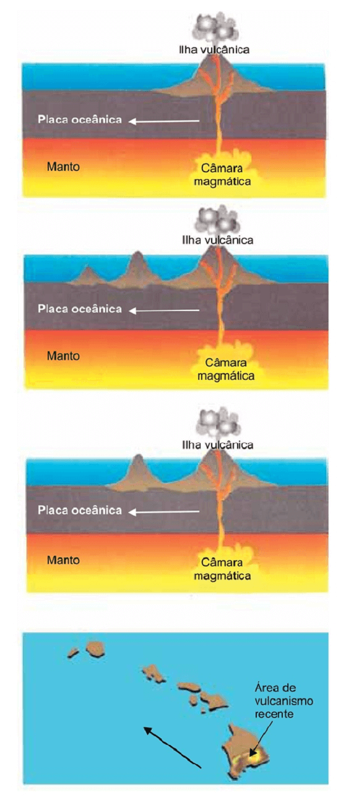
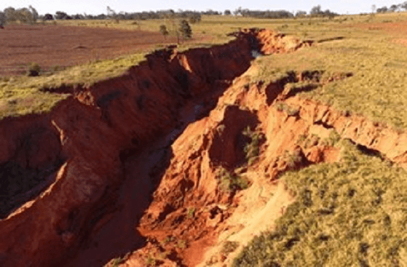
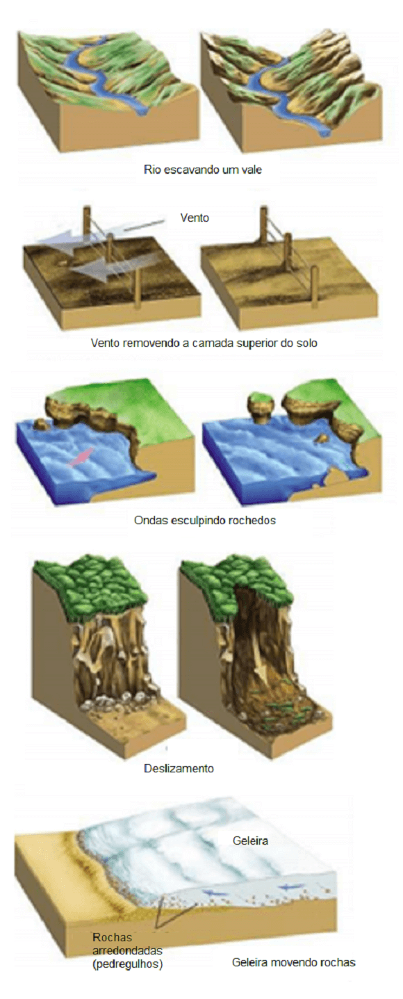

Conteúdo:
Questão 01
(UNICHRISTUS 2020) Leia atentamente.
SENSORIAMENTO REMOTO
A técnica cartográfica chamada de sensoriamento remoto consiste na transmissão, a partir de um satélite, de informações sobre a superfície do planeta ou da atmosfera. Quase toda coleta de dados físicos, para os especialistas, é feita por meio de sensoriamento remoto, com satélites especializados que tiram fotos da Terra em intervalos fixos. Para a geração das imagens pelos satélites, escolhe-se o espectro de luz que se quer enxergar. Alguns podem enviar sinais para captá-los em seu reflexo com a Terra, gerando milhares de possibilidades de informação sobre minerais, concentrações e tipos de vegetação, entre outros.
Com base no texto, pode-se concluir que a técnica cartográfica
Disponível em: https://www.sogeografia.com.br /Conteudos/GeografiaFisica/Cartografia/content1.php. Acesso em: 9 jul. 2020.
a) é de uso restrito em função do baixo nível de versatilidade técnica e dos elevados custos de produção.
b) tem artifícios que acabam com as distorções espaciais das representações cartográficas e, com isso, cria-se uma multifuncionalidade em torno dos produtos cartográficos.
c) apresenta uma evolução pífia e, por isso, coloca a cartografia como uma ciência marginal e de baixa funcionalidade.
d) garante à produção de representações espaciais uma relevância em função da utilização dos seus produtos em vários setores socioeconômicos.
e) é de uso restrito devido a ser um setor estratégico e de garantia de soberania nacional, pois, por meio das imagens, as fronteiras nacionais podem ficar mais bem protegidas.
Questão 02
(UPF 2010) O sensoriamento remoto é um conjunto de técnicas utilizado pela cartografia para analisar e interpretar o espaço geográfico.
A alternativa que indica corretamente essa técnica é:
a) termógrafo, bússola, curvímetro.
b) cartas marítimas, cartas topográficas, radar.
c) fotografias aéreas, imagens de radar, imagens de satélites.
d) telescópio, bússola, clinômetro.
e) altímetro, GPS, astrolábio.
Questão 03
(ACAFE Medicina 2021) A Terra é dividida em diferentes camadas com características e composições distintas.
Sobre a estrutura e a dinâmica interna da Terra, assinale a alternativa incorreta:
a) A crosta terrestre ou litosfera é a camada mais externa da Terra, formada por placas tectônicas. A crosta oceânica, que serve de base para os oceanos, atinge uma espessura maior que a crosta continental.
b) O núcleo é dividido em duas partes: núcleo interno e núcleo externo. O campo magnético da Terra é formado a partir das características de composição e da dinâmica do núcleo externo.
c) As informações, que se têm sobre as camadas internas da Terra, foram obtidas por vias indiretas, como o estudo de abalos sísmicos e do vulcanismo e das pesquisas dos fundos oceânicos.
d) O manto é a camada intermediária entre o núcleo e a crosta. Os materiais que compõem o manto, em altíssima temperatura, formam o magma, que se movimenta através de correntes de convecção. É dessa camada que provêm as lavas que chegam à superfície quando ocorrem erupções vulcânicas.
Questão 04
(UFPI 2006) Marque a alternativa que indica algumas características das Eras Geológicas da Terra:
a) Na Era Paleozóica, durante os períodos Cretáceo e Jurássico, ocorreu a formação do petróleo e o início da separação dos continentes.
b) A Era Cenozóica se iniciou há cerca de 65 milhões de anos, sendo marcada pelo aparecimento do homem moderno e pela formação das montanhas jovens: Andes, Alpes, Rochosas e Himalaia.
c) O Pré-Cambriano corresponde ao período geológico em que se iniciou a formação das praias brasileiras e do delta do rio Parnaíba.
d) O Quaternário e o Terciário são períodos da Era Mesozóica que definem a última grande mudança climática (glaciação) e o desaparecimento dos dinossauros.
e) Os períodos Pré-cambriano e Carbonífero, da era Mesozóica, correspondem ao tempo de formação das grandes jazidas de carvão mineral e dos vegetais superiores, como as coníferas.
Questão 05
(IFRS 2016) Considere as afirmações abaixo sobre tectônica de placas.
I - O movimento das placas tectônicas é apenas convergente ou divergente.
II - As zonas de convergência de placas tectônicas são as regiões mais suscetíveis a terremotos e vulcões.
III - Entre o choque de duas placas tectônicas, uma continental e outra oceânica, a placa que normalmente mergulha sob a outra é a placa oceânica, que é mais densa.
IV - No livro “A origem dos continentes e oceanos”, Alfred Wegener formulou a teoria da deriva continental que afirmava que os continentes se movimentavam.
Estão corretas apenas
a) I e II.
b) II e III.
c) I, II e III.
d) I, II e IV.
e) II, III e IV.
Questão 06
(IFMG 2015) O estabelecimento da teoria da Tectônica de Placas foi um importante marco para o desenvolvimento das Geociências.
Sobre essa teoria e os processos a ela relacionados, analise as afirmativas e marque a opção correta.
a) Uma zona de subducção se forma na faixa de contato entre placas divergentes, como no caso da América do Sul e Nazca, em que a placa oceânica, menos densa, mergulha sobre a continental.
b) As correntes de convecção, consideradas o motor da Tectônica de Placas, constituem-se na explicação fundamental para a movimentação dos continentes. Tais correntes foram descobertas pelo cientista alemão Alfred Wegener há mais de 100 anos.
c) Os terremotos são fenômenos de ordem geológica comuns nos limites de placas, explicando, por exemplo, os tremores que vêm ocorrendo no norte de Minas Gerais.
d) O mapeamento do fundo oceânico levou à descoberta de evidências que comprovaram o movimento dos continentes confirmando a Deriva Continental (1915) e fornecendo os argumentos para elaboração da Tectônica de Placas (1960).
Questão 07
(UEL 2015) A crosta terrestre sofreu, no decorrer da história da Terra, processos endógenos presentes na formação do relevo.
Em relação aos processos endógenos presentes nessa formação, considere as afirmativas a seguir.
I. Orogenia de dobramento resulta de pressões horizontais que formam ondulações no terreno em estruturas plásticas.
II. Orogenia de falhamento é submetida a um esforço interno de grande intensidade (vertical ou inclinado) sobre rochas de estruturas rígidas que se quebram.
III. Diastrofismo resulta de movimentos da crosta produzidos por processos tectônicos provocados e propagados pela energia interna da Terra.
IV. Dobramentos geológicos resultam de pressões verticais que ocorrem, geralmente, sobre as rochas basálticas.
Assinale a alternativa correta.
a) Somente as afirmativas I e II são corretas.
b) Somente as afirmativas I e IV são corretas.
c) Somente as afirmativas III e IV são corretas.
d) Somente as afirmativas I, II e III são corretas.
e) Somente as afirmativas II, III e IV são corretas.
Questão 08
(FGV-SP 2019) Observe a sequência de imagens para responder à questão.

(TEIXEIRA, Wilson et all, Decifrando a Terra, 2000).
Com base em conhecimentos acerca da tectônica global, assinale a alternativa que nomeia e explica o fenômeno responsável pela formação das ilhas vulcânicas esquematizado na sequência.
a) Subducção: parte mais fria e velha de uma placa mergulha por debaixo de outra placa menos densa.
b) Obducção: deslocamento de partes da crosta oceânica sobre uma continental.
c) Hot spots: atividades magmáticas ligadas a porções ascendentes de plumas do manto.
d) Epirogenia: ascendência de parte da crosta continental devido a fraturas.
e) Convecção: ascendência de material magmático do manto para a superfície da crosta.
Comentário:
O arquipélago mapeado é o Havaí, em pleno oceano Pacífico, uma região de forte manifestação vulcânica. Trata-se de um hotspot, traduzindo literalmente, uma “região quente” no sentido de forte atividade vulcânica, onde uma pluma de material magmático ascende à superfície, dando origem a vulcões como os montes Kilauea e Mauna Loa no Havaí.
Questão 09
(FMJ SP 2017) Tal fenômeno geológico consiste na formação de grandes buracos causados por chuvas e intempéries em solos onde a vegetação é escassa, que ficam assim cascalhentos e suscetíveis de carregamento por enxurradas. Ocorre no Sul, Sudeste e Centro-Oeste do Brasil e está geralmente associado ao uso e ao tipo do solo, ao substrato geológico, às características climáticas, hidrológicas e ao relevo.
(www.agencia.cnptia.embrapa.br. Adaptado.)

Fonte: https://conteudoms.com/site/ver-conteudo/ novo-horizonte-do-sul-vocoroca-na-linha-santa-rosa-causa-revolta-de-morador
O fenômeno descrito no excerto denomina-se
a) eutrofização.
b) lixiviação.
c) voçorocamento.
d) arenização.
e) laterização.
Questão 10
(UFJF 2019) Observe a figura:

Fonte: https://www.britannica.com /science/erosion-geology (Adaptado).
Todas as figuras estão associadas ao processo de
a) erosão.
c) assoreamento.
d) voçorocamento.